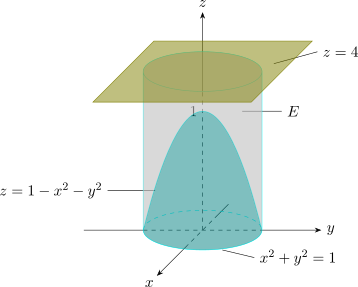
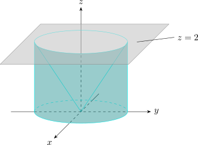

3.12 Triple Integrals In Cylindrical Coordinates
In cylindrical coordinates \(x = r\cos \theta \), \(y = r\sin \theta \), \(z = z\), a small box \(\Delta r\,\Delta \theta \,\Delta z\) is a polar rectangle of area \(r\,\Delta r\,\Delta \theta \) thickened by \(\Delta z\). So for a type 1 solid whose projection \(D\) is described in polar coordinates, \[E = \{(r,\theta ,z) \mid \alpha \leq \theta \leq \beta ,\ h_1(\theta )\leq r\leq h_2(\theta ),\ u_1(r\cos \theta ,r\sin \theta )\leq z\leq u_2(r\cos \theta ,r\sin \theta )\},\] \[\iiint \limits _E f(x,y,z)\,dV = \int _\alpha ^\beta \int _{h_1(\theta )}^{h_2(\theta )} \int _{u_1}^{u_2} f(r\cos \theta , r\sin \theta , z)\,r\,dz\,dr\,d\theta .\] That is, replace \(dV\) by \(r\,dz\,dr\,d\theta \). Cylindrical coordinates suit solids with an axis of symmetry, taken as the \(z\)-axis.
Example 3.12.1. A solid \(E\) lies within the cylinder \(x^2 + y^2 = 1\), below the plane \(z = 4\), and above the paraboloid \(z = 1 -x^2 -y^2\). The density at any point is proportional to its distance from the axis of the cylinder. Find the mass of \(E\).

Solution. In cylindrical coordinates the paraboloid is \(z = 1 - r^2\), so \[E = \{(r,\theta ,z) \mid 0\leq r \leq 1,\ 0 \leq \theta \leq 2\pi ,\ 1 - r^2 \leq z \leq 4\} .\] The density is \(\rho = K\sqrt {x^2 + y^2} = K r\) for a constant \(K\), so \begin {align*} m & = \int ^{2\pi }_0 \int ^1_0 \int ^4_{1-r^2} K r\cdot r\,dz\, dr \, d\theta = 2\pi K\int ^1_0 r^2\left (3 + r^2\right ) dr\\ & = 2\pi K\left (1 + \frac 15\right ) = \frac {12\pi K}{5} . \end {align*}
Example 3.12.2. Evaluate \[\int ^2_{-2}\int ^{\sqrt {4-x^2}}_{-\sqrt {4 - x^2}}\int ^2_{\sqrt {x^2 + y^2}}(x^2 + y^2)\, dz \,dy \,dx .\]

Solution. The region of integration lies above the cone \(z = \sqrt {x^2 + y^2}\) and below the plane \(z = 2\), over the disc \(x^2 + y^2\leq 4\). In cylindrical coordinates it is \[E= \{ (r,\theta ,z) \mid 0\leq r \leq 2,\ 0 \leq \theta \leq 2\pi ,\ r \leq z \leq 2\},\] so the integral is \[\int ^{2\pi }_0\int ^2_0\int ^2_r r^2\cdot r\,dz\, dr\,d\theta = 2\pi \int ^2_0 r^3(2 - r)\, dr = 2\pi \left (8 - \frac {32}{5}\right ) = \frac {16\pi }{5} .\]
Example 3.12.3. Find the volume of the solid enclosed by the paraboloids \(z = x^2 + y^2\) and \(z = 8 - x^2 - y^2\).
Solution. They meet where \(r^2 = 8 - r^2\), that is \(r = 2\), at height \(4\). So \[V = \int _0^{2\pi }\int _0^2\int _{r^2}^{8 - r^2}r\,dz\,dr\,d\theta = 2\pi \int _0^2(8r - 2r^3)\,dr = 2\pi (16 - 8) = 16\pi .\]
Questions on this section
Stuck on something here? Ask below and it stays attached to this topic.